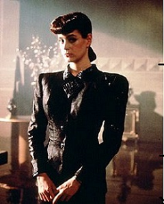
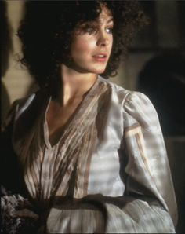

No character in Bladerunner dresses more exaggeratedly than Rachael, false niece of the leader of the Tyrell Corporation and an android of the Nexxus 6 variety. She appears at first, right before taking Rick Deckard's Voigt-Kampff test, in a dark blazer with extreme shoulder pads, layered over a matching pencil skirt and paired with elaborately coiffed hair and bright red lips. Thick eyeliner, long nails, and heels complete the look. The ensemble as a whole seems highly inspired by Western fashion of the 1940's to me, and this impression is heightened by Rachael languidly smoking a cigarette and making dry comments while taking Deckard's test, looking and acting like a futuristic version of a 1940's strong leading lady. The next few times we meet Rachael she is dressed in a similarly dramatic manner - at one point she wears a large fur coat with an extreme collar and her usual lips and hair. It is not until she finally becomes Deckard's lover that she, quite literally, lets her hair down. Her natural hair is curly and unkempt, and, after she becomes an item with Deckard, she wears flowy, rather shapeless clothing and sports no makeup. Rachael's loss of control over her own life and affairs is represented in this transition from menswear-inspired, carefully-created costume to a natural, loose look that appears when Deckard begins to look after her.
| Rachael Before Transitioning | Rachael After Transitioning |
|---|---|
|  |  |
In science fiction, viewers are presented with a ''confrontation between and mixture of those images to which we respond as 'alien' and those we know to be familiar'' (Sobchack, 87). Rachael's initial costumes are familiar in that they resemble the dress and appearance-cultivation of a bygone age, but alien in that they are over-exaggerated, disproportionate to the point of being strange, even within the context of slightly more dramatic women's styles in the future setting of Bladerunner. Rachael is trying to emulate a stereotype - the stereotype of a strong, beautiful woman exemplified by glamorous heroines of the golden age of cinema, but the front she presents is warped. Rachael is owned by the Tyrell Corporation, and no matter what she does she cannot extend her lifeline, make her implanted memories reality, or change her status from android to human. There is something off about Rachael's initial dress, her mannerisms, just as there is something off about the way she easily places her well-being into Deckard's hands later in the film, becomes a helpless sleeping beauty lounging about his home while he fights the metaphorical dragons threatening them both. In short, she is acting - affecting certain behaviors to fit the normal roles in human society she wants to fill but cannot.
This desire to be human is portrayed most disturbingly in the scene where Deckard aggressively comes on to Rachael and the two have sex. At this point, Rachael sheds her exaggerated costume, a symbol of masculinity and control as well as a feminine stereotype, and allows herself to be ravished by Deckard. Since Rachael is definitely an android and Deckard very probably is one, the two are acting here how they believe society wants them to act. They use perceived norms to feel more like actual humans. These actions, other than displaying the inherent wrongness of sexual assault, are disturbing because of what they say about society as a whole. It is jarring to think that Deckard and Rachael, following societal norms, believe the correct, normal way to initiate relations is through aggression on the part of the man and complete submission on the part of the woman. Rachael's transition from a person who displays power with both strong geometry and sexual imagery in her mode of dressing to a passive and willing object of assault happens during this scene, and it becomes evident that she is switching from one normative-seeming way of being to another.
Bladerunner utilizes Rachael's style choices and uncomfortable scenes to cast a jarring light on the stereotypes and societal norms that dictate behavior. Rachael and Deckard are not human, but they are almost human, which implies humans often act the way these two characters do, a sad fact considering the aggressiveness in Deckard's behavior and passiveness in Rachael's. This film is bringing to light a problem in society, and Rachael's exaggerated mode of dress greatly helps make this point.
If you are interested in learning the thoughts behind more of the costumes used in Bladerunner, visit this Bladerunner costume blog post for an excellent analysis of the various looks seen in the movie.